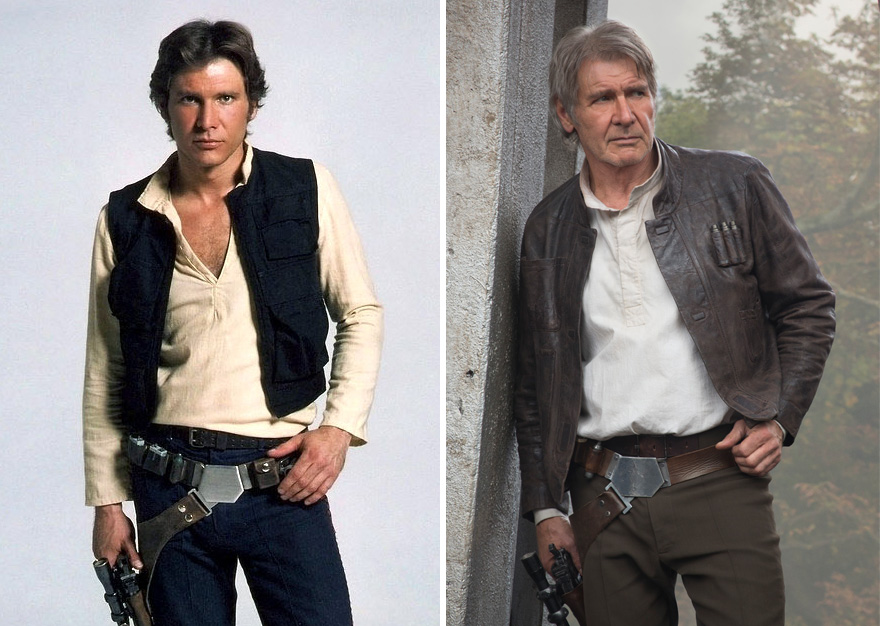
REPARTO
Las películas de Star Wars cuentan con amplios elencos, muchas veces corales, con múltiples protagonistas que han dado vida a algunos de los personajes más icónicos del cine. Mark Hamill, Harrison Ford y Carrie Fisher protagonizan la trilogía original como Luke Skywalker, Han Solo y Leia Organa. En las precuelas, Liam Neeson, Ewan McGregor, Natalie Portman y Jake Lloyd interpretan a Qui-Gon Jinn, Obi-Wan Kenobi, Padmé Amidala y Anakin Skywalker, respectivamente, con Hayden Christensen tomando el papel de Anakin en su etapa adulta.
Años más tarde, actores de la trilogía original regresaron para compartir pantalla con una nueva generación: Adam Driver como Kylo Ren, Daisy Ridley como Rey y John Boyega como Finn. Otros nombres destacados incluyen a Felicity Jones en Rogue One (2016) y Alden Ehrenreich como el joven Han Solo en Solo: A Star Wars Story (2018).
A continuación, repasamos algunos de los actores que interpretaron a los personajes más icónicos de la saga, comparando sus primeras apariciones con su actualidad.
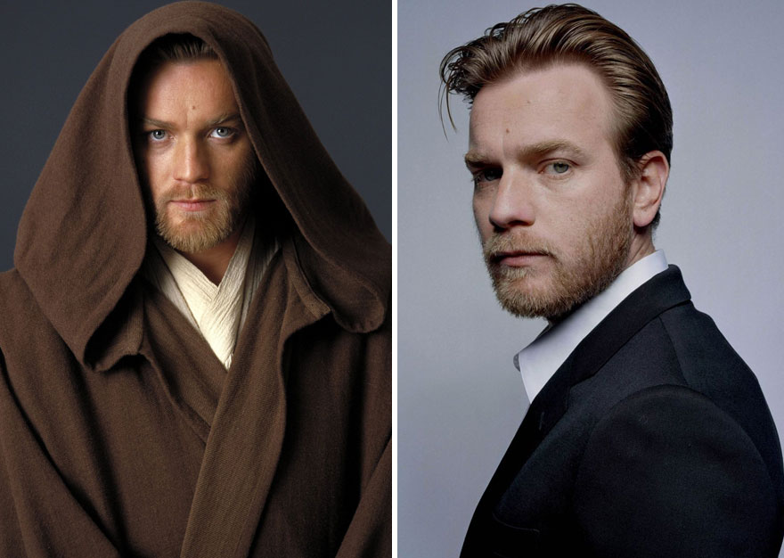
2. Ewan McGregor como el joven Obi-Wan Kenobi, 2005 y 2015
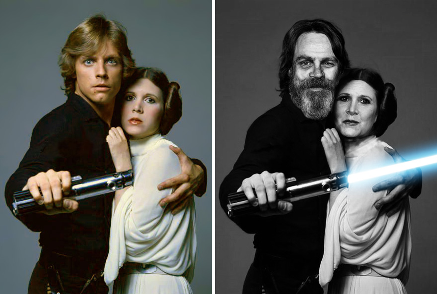
3. Mark Hamill y Carrie Fisher como Luke Skywalker y la Princesa Leia, 1977 y 2015
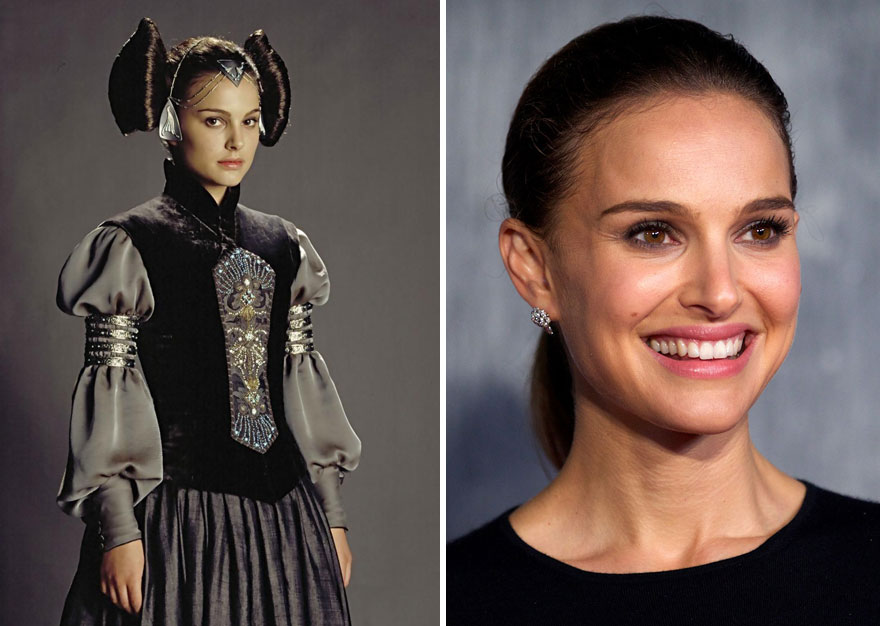
4. Natalie Portman como Padmé Amidala, 2003 y 2015
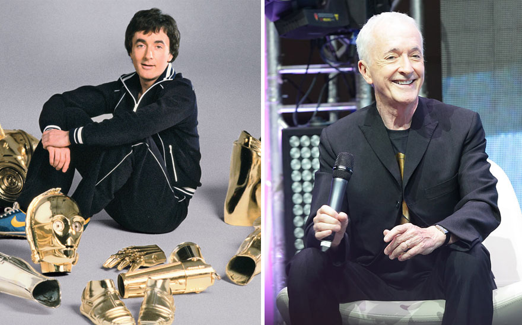
5. Anthony Daniels como С-3РO, 1977 y 2015
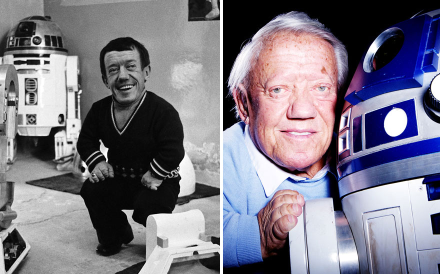
6. Kenny Baker como R2-D2, 1977 y 2015
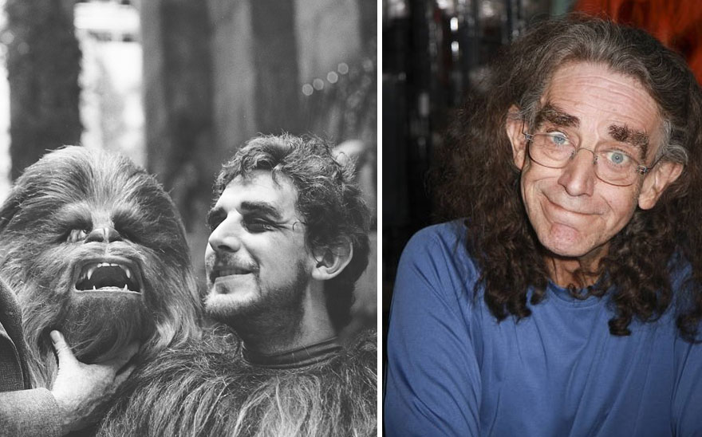
7. Peter Mayhew como Chewbacca, 1977 y 2015
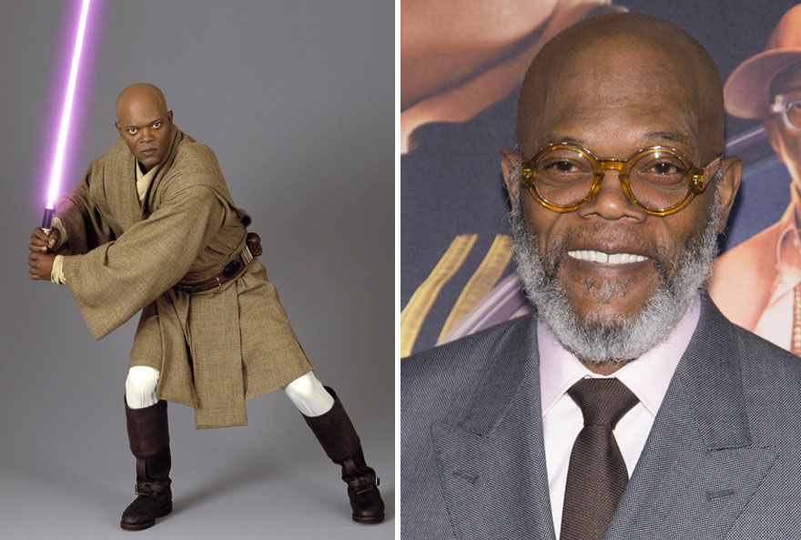
8. Samuel L Jackson como Mace Windu, 2005 y 2015
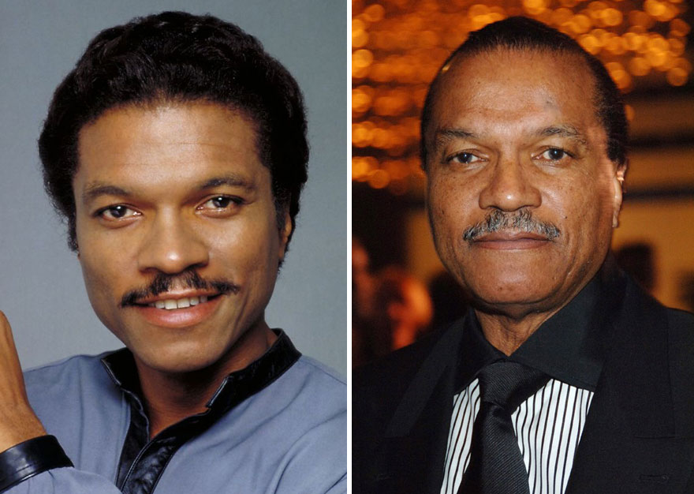
9. Billy Dee Williams como Lando Calrissian, 1980 y 2014
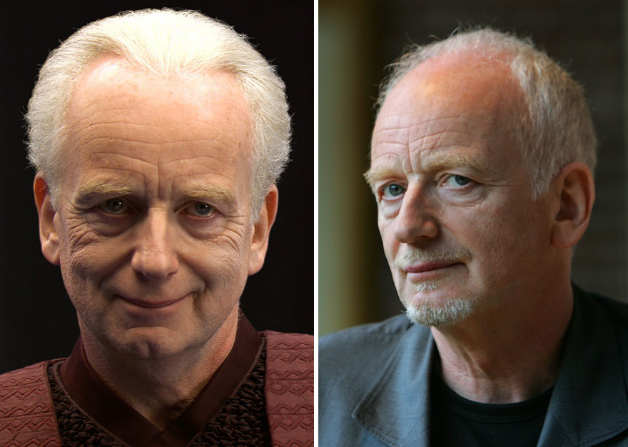
10. Ian McDiarmid como Palpatine, 2005 y 2015
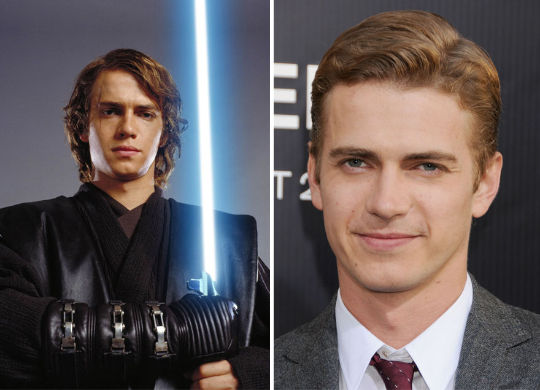
11. Hayden Christensen como Anakin Skywalker, 2005 y 2015
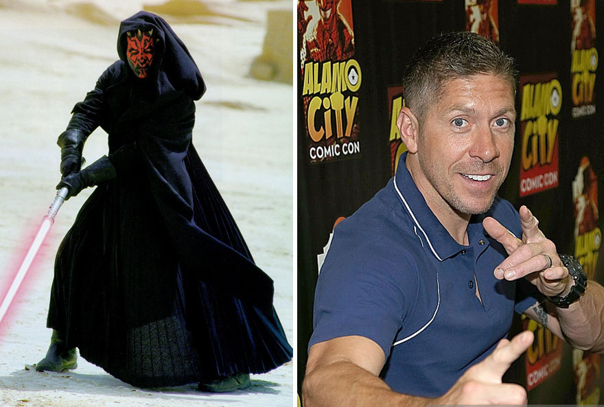
12. Ray Park como Darth Maul, 1999 y 2015
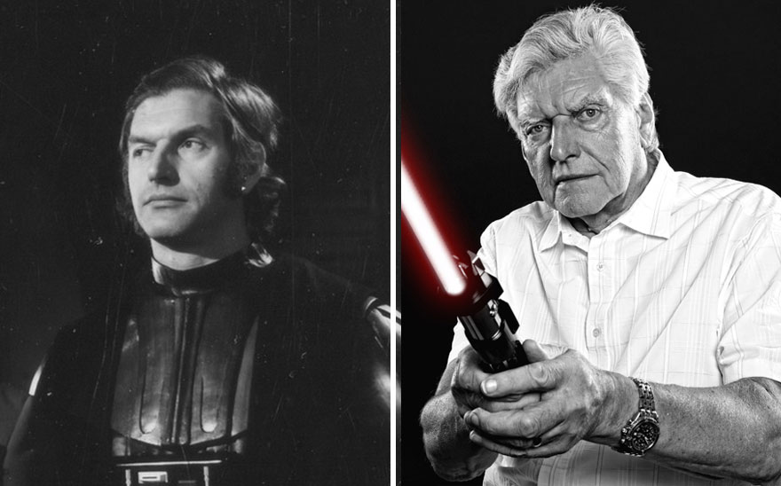
13. David Prowse como Darth Vader, 1977 y 2015
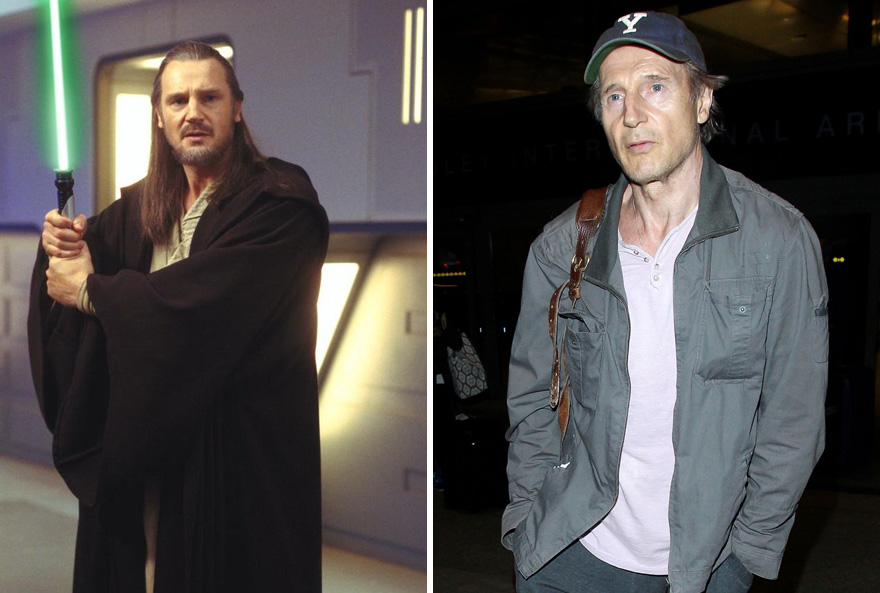
14. Liam Neeson como Qui-Gon Jinn, 1999 y 2015
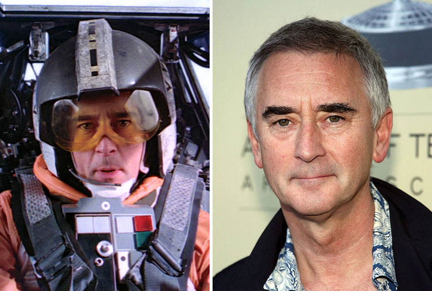